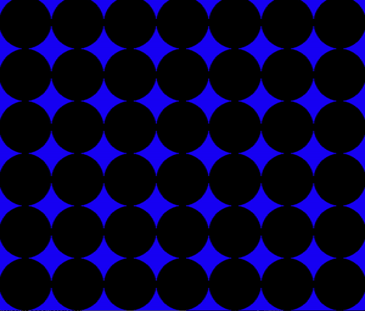

AlphaZero in Connect4
Implemented a self-play reinforcement learning algorithm based on the AlphaZero paper. It was trained using a multiprocessing approach for over 3 weeks, achieving human-level ability. Find out more.
Skills: Python, Reinforcement Learning, Neural Networks, Multiprocessing, Monte-Carlo-Tree-Search